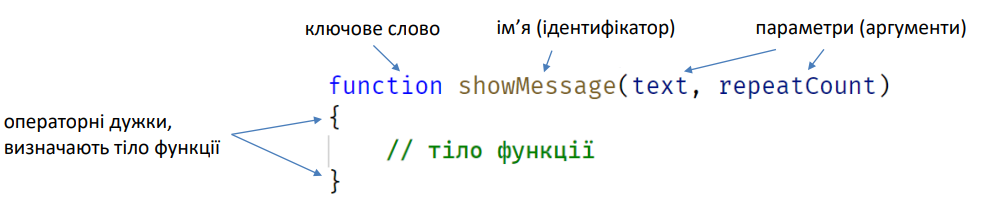
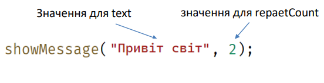
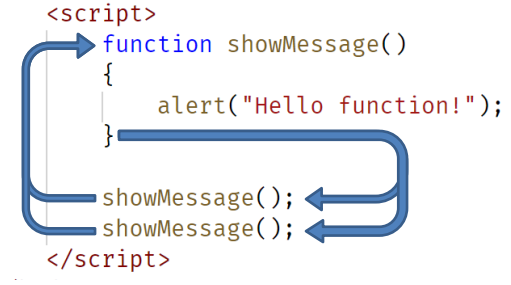

Функція – фрагмент програмного коду (набір інструкцій), до якого можна звернутися з іншої частини програми за іменем цієї функції.
Функція - це блок із різних команд. З нею легко створювати порядок у коді програми, позбавляючись непотрібних повторень і заплутаних частин.
Функції — це головні "будівельні блоки" програми. Вони дозволяють робити однакові дії багато разів без повторення коду.
Функції - це інструмент для структурування великих програм, зменшення повторень, призначення імен підпрограмам та ізолювання підпрограм одна від одної.
Функцію потрібно оголосити перед тим, як використовувати.

Для виклику використовується ім’я функції із зазначенням значень параметрів.


Виклик showMessage() виконує код із тіла функції. В цьому випадку, ми побачимо повідомлення двічі.
Цей приклад яскраво демонструє одну з найголовніших цілей функції – уникнення повторення коду.
Якщо нам потрібно змінити повідомлення, достатньо змінити тіло функції, яке виводить це повідомлення.
Функція може повертати значення. Виклик функції можна присвоїти змінній.
значення ← getMessage();
Для визначення значення, що повертається, використовується ключове слово return в тілі функції.
function getMessage() {
return 'Some awesome text message!';
}
let value = getMessage();